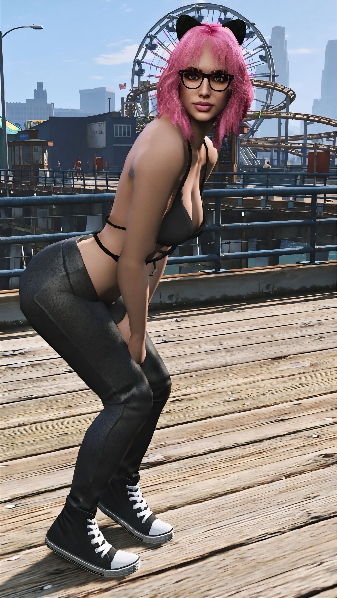
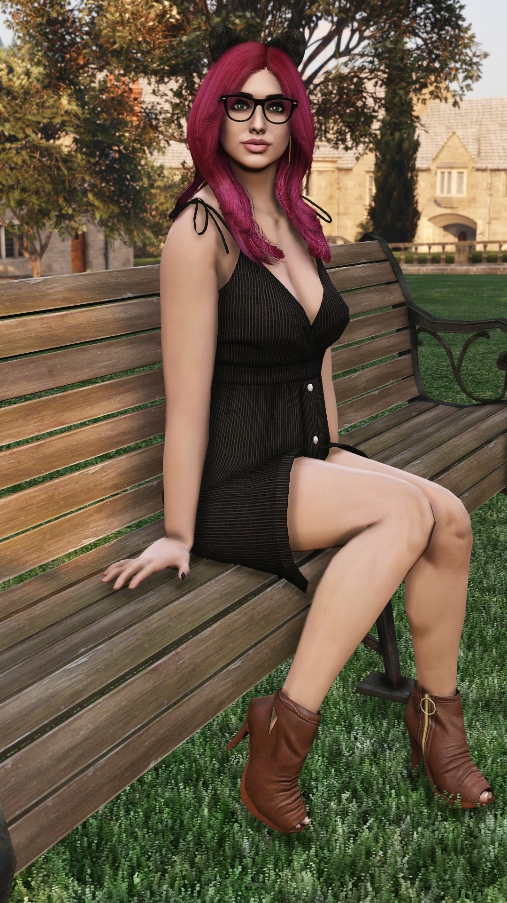
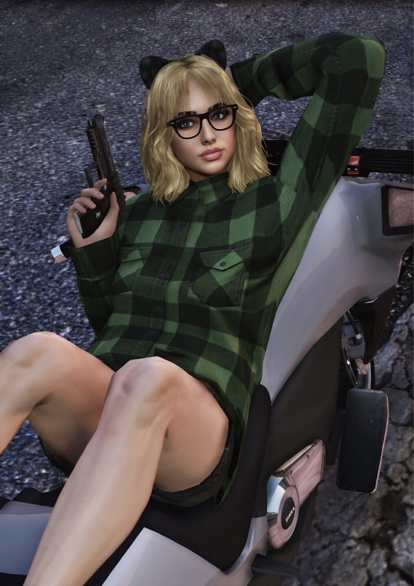

Nman.Catz
GTA V Virtual Photographer, PC Gamer, Crew Founder and Certified Cat Lover!
About Me
I am a PC gamer and a longtime fan of GTA V. I have been creating virtual photography in Los Santos since 2019, and I am still having fun exploring new ideas and improving my content style. I always strive to treat people with as much respect and kindness as possible!
I mainly photograph my GTA Online character. As you can tell from the goofy cat ear headband that she wears in literally every photo I create, I love mixing my real-life love of cats into my photography. I also create reels that I hope capture some emotion, nostalgia, and atmosphere. I am always down to collaborate with fellow creators!
I am currently studying Visual Communications at NAIT with the goal of becoming a graphic designer. I have also started diving into web development and coded both this site and my crew website using Visual Studio Code.



The CATZ Community
Do you like GTA crews that value friendships, loyalty, fun times, and/or cats? Then the CATZ Community might be the purrfect fit for you!
CATZ is one gamer family united under Project Cat Eye, our official crew for players on PC, PlayStation, and Xbox. No matter which platform you play on, you will be part of the same crew and community. Visit our crew website to learn more and join us! (Don't worry, we won't bite if you prefer dogs!)